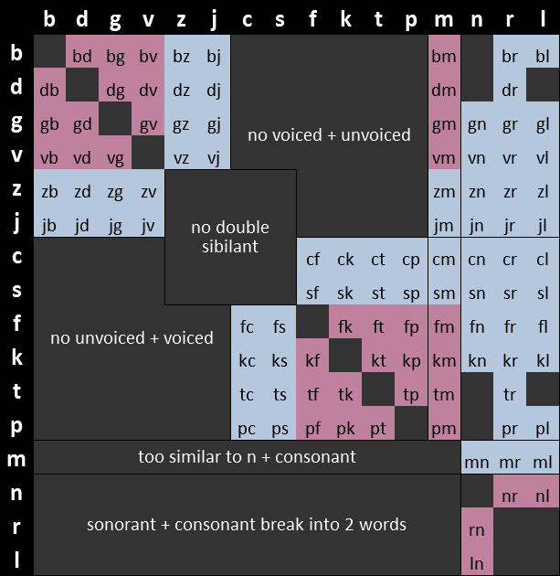

Morphology
The morphology of Eberban is composed of 16 consonants (n, r, l, m, p, b, f, v, t, d, s, z, c, j,
g, k), five vowels (i, e, a, o, u) the letter h, the hyphen - and the quotation marks
[ and ], for a total of 25 symbols. Among the consonants, n, r and l are
designated as (alveolar) sonorants, and play an important role in Eberban’s morphology. The
alphabetical order is hnrlmpbfvtdszcjkgieaou. The same letter appearing multiple times in a row is
considered identical to the letter not being repeated, but can informally be used in written media
to convey length of sounds in speech. Any other character is considered a space, and quotation marks
are also considered a space outside of foreign quotes syntax (explained later).
Strings of multiple vowels and h appear a lot in Eberban’s morphology, and thus are coined vhowels in this book. Note that in vhowels, h can only appear between two vowels.
Words are usually written separated by spaces, however this is not mandatory. Spaces are only mandatory before words starting with a vowel or a sonorant.
Eberban text is usually written all lowercase (outside of foreign text quotes), but uppercase can
informally be used in written media to convey volume (such as yelling). No punctuation symbol is
used but informally punctuation from other languages can be used as long as the proper Eberban
grammar is also used. . is commonly used to visually join two words that must have space between
them, while one or many . surrounded by spaces usually convey a longer pause in speach. Hyphen can
be used at syllable boundary to make them stand-out without breaking the word in two, and also allows
a word to continue on the next line.
Word types
Particles
Particles are words exerting grammatical functions. They can either:
- start with a single non-sonorant consonant, followed only by vhowels, like zi, mio or tiho.
- start with a sonorant or vowels, and be a string of vhowels and sonorants. They can end either with a vowel or sonorant. Exemples: a, on, ahu or nu.
Particles are themselves categorized into families having identical grammar but different meanings. Those families are usually designated using a particle in capital letters (like MI or VEI), which is by convention the first particle in this family in alphabetical order.
All other words are predicate words and express intrinsic meanings, such as “cat”, “language” or “teach”. They are grouped into the following categories :
Roots
Roots are the building blocks of the language and express meanings that would be hard or too long to convey otherwise. They can either:
- start with a single non-sonorant consonant followed by a mix of vhowels and at least one sonorant, medial consonant pair or consonant triplet, like ban, mana, cuina or marne.
- start with a valid initial consonant pair followed by a mix of vhowels and any number of sonorants, medial consonant pairs or consonant triplet (even none), like bju, cpena or djin.
A consonant triplet is a string of 3 consonants C1C2C3 such that C1C2 is a medial pair and C2C3 is an initial pair.
A sonorant can appear only between two vowels or at the end of the root, while a medial pair or consonant triplet can appear only between two vowels, but not at the end.
The following chart shows initial pairs in light blue, medial pairs in pink, and invalid pairs in dark gray (with a short explanation for why they are invalid):

Borrowings
Borrowings allow importing foreign words or names. They are prefixed by the vowel u, and have more relaxed rules about consonants than native Eberban words:
- Initial pairs can also appear in the middle of the word.
- Medial pairs can also appear initially as they can be easily uttered after borrowing prefix u
- Sonorant + consonant also counts as a consonant pair and doesn’t break into 2 words.
- Sonorant + initial pair also counts as a consonant triplet and doesn’t break into 2 words.
After the u prefix the borrowing can start by a vowel, a single consonant, a initial or medial consonant pair, a consonant triplet or h. If this first letter is a u it must be prefixed with a ’ to separate it from the the prefix.
Borrowings must end with a vowel, or a vowel followed by a single consonant (not only sonorants). In written media, borrowings must be followed by space(s), which is realized in speech by pausing after the borrowing to properly separate it from the following word.
Similarly, the initial u must be preceded by space(s), and realized orally as either a pause or a glottal stop.
Freeform variables
Freeform variables allow speakers to define their own predicates with less morphological restrictions than with roots or dedicated particles. They follow the same morphology as borrowings but use the i prefix instead of u.
Compounds
Compounds allow making new words from multiple other kind of words. They start with either e, en or er and follow the same rule as the u of borrowings. Their structure will be detailed later in this book.
Example
With spaces : a za ualis zue gali spie ebansa eberban
With mandatory spaces only : aza.ualis.zuegalispie.ebansa.eberban
Meaning: Alice is happy to speak in Eberban.
Particles : a, za, zue
Borrowing : ualis
Freeform variable: ibar (not present in exemple)
Root : gali, spie
Compounds : ebansa, eberban
Reasoning
Outside of borrowings and assignable names, encountering a non-sonorant consonant or a pause means it is the end of a word; unless it the first letter of a medial consonant pair which cannot be misunderstood for the start of a new word. Spaces prevent words starting with a vowel or sonorant to “merge” into the previous words.
These simple rules prevent any ambiguity of word boundaries, which is called a Self-Segregating Morphology.